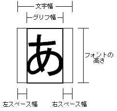
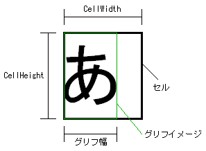

ここに示す語の定義はG2Dのフォント/文字(列)表示ライブラリ関連文章中での使われ方であり、 一般的な語の意味と異なる事があります。
| NITROフォント | G2Dが文字表示に利用するフォント。 |
| フォントリソース | NITROフォントがG2Dで利用できるように展開される前の状態のもの。また、それを格納したファイル。 |
| グリフ | 文字の形。 |
| グリフイメージ | 画像としての面を特に強調してグリフを指す言葉。 |
| グリフインデックス | NITROフォント内の各グリフに割り当てられたID番号。 |
| 文字コード | 各文字に割り当てられた番号。 |
| 文字エンコーディング | 文字コードをバイト列として表現する場合の文字コード列とバイト列間の変換方法 |
NITROフォントには以下のような情報が格納されています。
NITROフォントでの各文字はグリフイメージ
(NNS_G2dFontGetGlyphImage)と
文字幅を分解した3つの幅データ（左スペース幅、グリフ幅、右スペース幅
(NNS_G2dFontGetCharWidths)）
からなっています(下図)。
グリフ幅はグリフを囲む最小限の矩形の幅で、
左スペース幅と右スペース幅はその矩形の左右に存在する何も描画する必要のない領域の幅です。
左スペース幅とグリフ幅、右スペース幅を足したものが文字幅となります。
G2Dでの文字描画(NNS_G2dCharCanvasDrawChar)
では左スペース幅分ずらした位置からグリフ幅分のグリフイメージを描画します。
描画位置を文字幅分右へと移動させながら文字描画を行う事で文字列の描画を行えます。
左スペース幅と右スペース幅は負の値をとることができ、文字幅がグリフ幅より小さくなる事もあります。
この場合は前後の文字と重なって描画されることになります。

NITROフォントでは文字毎のグリフの高さは格納していません。
代わりにフォント中の全ての文字を表現するのに必要十分な高さをフォントの高さ
(NNS_G2dFontGetHeight)
として格納しています。
NITROフォントではグリフは BMP イメージとして格納されています。
各グリフは
NNS_G2dFontGetCellWidth() x
NNS_G2dFontGetCellHeight()
ピクセルの BMP イメージに格納されており、この BMP イメージをセルと呼びます。

グリフイメージはセル内に左詰めされて格納されており、その幅は
NNS_G2dFontGetCharWidths()
等で取得できます。
いくつかの関数ではNITROフォントに存在しない文字が指定されたとき、
代わりの文字が使用されます。
この代わりの文字を代替文字と呼び、NITROフォントに登録されています
(NNS_G2dFontGetAlternateGlyphIndex)。
文字を引数とするフォント操作関数では文字の指定に 16 bitの文字コードを用います。
各関数はこの文字コードを意味のある数値としては扱いません。
文字コードは関数内ですぐにNITROフォント内の変換テーブルを用いてグリフインデックスに変換され、
実際の処理は全てグリフインデックスにより行われます。
これによりNITROフォント内の文字コード変換テーブルさえ適切に作成されていれば、
任意の文字セットを扱う事ができます。
逆にいえば、NITROフォントは文字セットごとに用意される必要があり、
プログラム中で使用される文字セットとNITROフォントの文字セットが異なると意図した結果が得られません。
フォント関数は以下のように大きく6つのグループに分ける事ができます。
2007年03月14日版より縦書き/縦持ちの簡易サポートが追加されました。 縦書き/縦持ち用のフォントを使用することで縦書き/縦持ち用の描画を行う事ができます。 ただし、これは簡易的なものであり、フォントリソースの一部を通常と異なる使い方をすることで実現しています。 そのため、いくつかの制限があります。
以下の関数は縦書き/縦持ちフォントに対して正常に動作しません。
NNS_G2dFontGetGlyph()
NNS_G2dFontGetGlyphFromIndex()
NNS_G2dFontGetCharWidths()
NNS_G2dFontGetCharWidthsFromIndex()
NNS_G2dFontGetHeight()
NNS_G2dCharCanvasDrawGlyph()
以下の関数では縦書き/縦持ちに関する注意があります。 詳しくはそれぞれの関数のリファレンスを参照してください。
NNS_G2dFontGetCharWidth()
NNS_G2dFontGetCharWidthFromIndex()
NNS_G2dFontGetBaselinePos()
NNS_G2dFontGetMaxCharWidth()
NNS_G2dFontGetStringWidth()
NNS_G2dFontGetTextHeight()
NNS_G2dFontGetTextRect()
NNS_G2dFontGetTextWidth()
NNS_G2dCharCanvasDrawChar()
NNS_G2dTextCanvasDrawString()
NNS_G2dTextCanvasDrawTaggedText()
NNS_G2dTextCanvasDrawText()
NNS_G2dTextCanvasDrawTextRect()
NNS_G2dTextCanvasGetStringWidth()
NNS_G2dTextCanvasGetTextHeight()
NNS_G2dTextCanvasGetTextRect()
NNS_G2dTextCanvasGetTextWidth()
横書き時の描画の原点は縦持ち/横持ちによらず文字の左上になります。
縦書き時の描画の原点は縦持ち/横持ちによらず文字の右上になります。
2007/03/14 「縦書き/縦持ち」の項を追加。
2005/05/25 初版